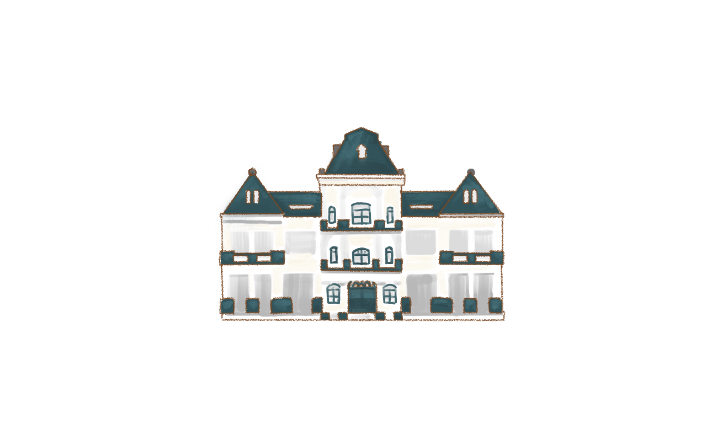
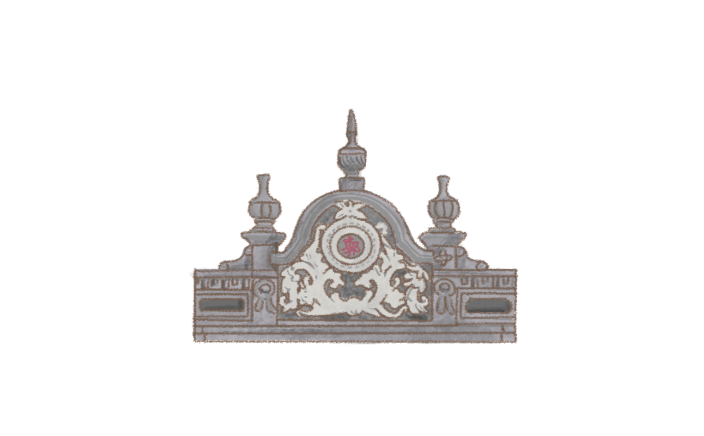
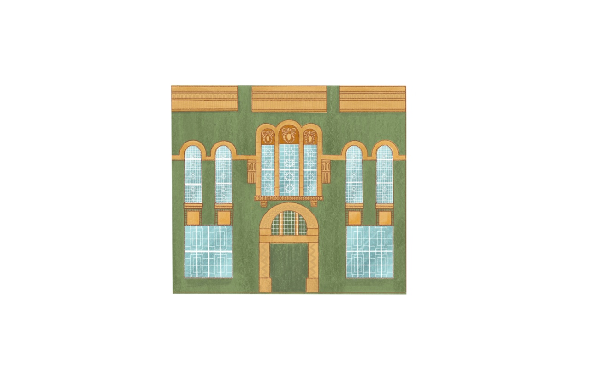

經典建築巡禮

陳林氏寶宅
採用傳統閩南式的「二進左右護龍」格局。外圍有高聳的紅磚牆，內部則有寬敞的內埕（前院）。

山牆
明治到大正時期受巴洛克式影響的清水紅磚與華麗立面山牆的建築。

斗六農會
百年歷史建築，結合實用主義與時代美學。

仁德咖啡
斗六最具代表性的百年街屋，日治時期老宅。



採用傳統閩南式的「二進左右護龍」格局。外圍有高聳的紅磚牆，內部則有寬敞的內埕（前院）。
明治到大正時期受巴洛克式影響的清水紅磚與華麗立面山牆的建築。
百年歷史建築，結合實用主義與時代美學。
斗六最具代表性的百年街屋，日治時期老宅。